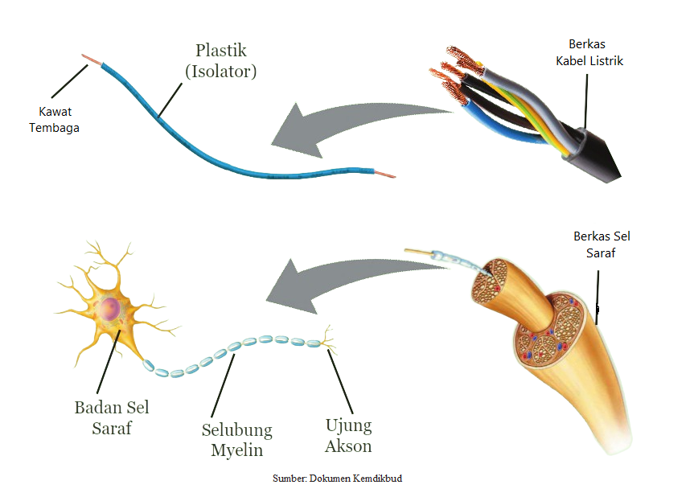

• Siswa dapat mengidentifikasi bagian sel saraf.
Setiap manusia memiliki sistem saraf yang dapat mengontrol seluruh aktivitas tubuh, contohnya gerak otot. Sistem saraf terdiri atas sel-sel saraf berfungsi untuk menerima, mengolah, dan mengirim rangsangan yang diterima panca indra. Setiap sel saraf terdiri atas tiga bagian, yaitu badan sel saraf, dendrit, dan akson atau neurit. Selain ketiga bagian tersebut, pada sel saraf juga terdapat selubung myelin. Berdasarkan ada dan tidaknya myelin, terdapat dua macam neuron, yaitu neuron yang berselubung myelin dan neuron yang tidak berselubung myelin. Agar dapat mengetahui sel saraf lebih lanjut, bacalah dengan teliti tabel 2 di bawah.
Tabel 2 Bagian Sel Saraf dan Fungsinya
| Bagian Sel Saraf | Deskripsi | Fungsi |
| Dendrit | Penonjolan badan sel yang bercabang-cabang dan berbentuk seperti cabang pohon. | Menerima impuls dari sel lain dan meneruskannya ke badan sel. |
| Badan sel | Di dalamnya terdapat inti sel yang dikelilingi oleh sitoplasma. Sitoplasma mengandung organela sel seperti mitokondria, ribosom, Badan Golgi dan retikulum endoplasma khusus milik sel saraf yang disebut badan Nissl. | Meneruskan impuls dari dendrit ke akson. |
| Akson/Neurit | Penonjolan badan sel berbentuk panjang dan silindris. Setiap satu sel saraf hanya memiliki satu akson. Ujung akhir akson disebut dengan terminal akson. Terminal ini memiliki beberapa percabangan dan berbonggol. Pada bonggol inilah akan dilepaskan neurotransmitter dan disebut sebagai bonggol sinaptik. | Meneruskan impuls dari badan sel saraf ke sel saraf lain atau ke sel otot atau ke sel kelenjar. Pada bonggol sinaptik terjadi proses sinapsis, yaitu komunikasi antara sel saraf satu dengan yang lain atau sel saraf dengan sel otot dan sel kelenjar menggunakan neurotransmitter. |
| Myelin | Selubung lemak berlapis-lapis, dihasilkan oleh sel Schwann. Lapisan lemak myelin sulit ditembus oleh ion-ion yang keluar dan masuk membran sel saraf pada bagian akson. | Mempercepat impuls saraf dengan membantu terjadinya loncatan muatan. |
| Nodus Ranvier | Daerah akson terbuka yang tidak diselubungi myelin. | Tempat terjadinya tarik-menarik muatan listrik di membran sel saraf. |
Sel saraf sering diibaratkan seperti kabel listrik karena memiliki bentuk dan mekanisme kerja yang hampir sama. Coba perhatikan gambar setiap sel saraf memiliki satu akson yang mendukung terjadinya perambatan atau hantaran arus listrik. Selain akson, penghantar listrik lain di dalam tubuh makhluk hidup adalah cairan tubuh. Cairan tubuh dapat berupa darah, cairan jaringan dan sitosol yang terdapat dalam sitoplasma sel. Pada sel saraf juga terdapat isolator listrik, yaitu selubung myelin pada akson.
Gambar 8 Berkas Sel Saraf dan Kabel Listrik
Pada akson tidak berselubung myelin, hantaran arus listrik dapat terjadi di sepanjang akson. Pada akson berselubung myelin, beda potensial terjadi di daerah akson yang tidak diselubungi myelin atau di daerah yang disebut nodus Ranvier. Tarik menarik muatan listrik terjadi di nodus Ranvier satu dan seterusnya. Dengan demikian, selain berfungsi sebagai pelindung akson, myelin juga dapat mempercepat terjadinya loncatan muatan listrik pada saraf.

Gambar 9 Pergerakan Impuls pada Akson Tidak Bermyelin (atas) dan Akson Bermyelin (bawah)
Baca materi terlebih dahulu!
Tunjukkan nama bagian sel saraf pada gambar sesuai dengan tabel di atas dengan mengisi kotak yang telah disediakan.

Gambar 10 Sel Saraf
Petunjuk :


| a.
|
b.
 |
c.
|
d.
|
e.
|
f.
|